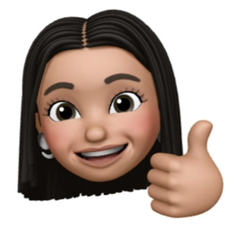

I believe the best research comes from speaking the language of my stakeholders
I have 7+ years of research experience under my belt, working on cross-functional product teams for FanDuel, LG, Blue Apron, Tencent, & Nike to name a few.
On the side I do nail art (check out my brand on IG), binge episodes of the bachelor, and publish poetry. I’m based in NYC with my partner in crime, Cino 🐈